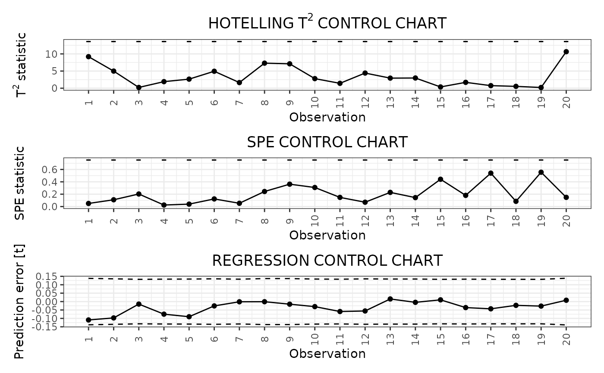

R/04_phaseII.R
control_charts_sof_pc.RdThis function builds a data frame needed to plot control charts for monitoring a monitoring a scalar quality characteristic adjusted for the effect of multivariate functional covariates based on scalar-on-function regression, as proposed in Capezza et al. (2020).
In particular, this function provides:
* the Hotelling's T^2 control chart,
* the squared prediction error (SPE) control chart,
* the scalar regression control chart.
This function calls control_charts_pca for the control charts on
the multivariate functional covariates and regr_cc_sof
for the scalar regression control chart.
The training data have already been used to fit the model. An optional tuning data set can be provided that is used to estimate the control chart limits. A phase II data set contains the observations to be monitored with the control charts.
control_charts_sof_pc(
mod,
y_test,
mfdobj_x_test,
mfdobj_x_tuning = NULL,
alpha = list(T2 = 0.0125, spe = 0.0125, y = 0.025),
limits = "standard",
seed,
nfold = NULL,
ncores = 1
)A list obtained as output from sof_pc,
i.e. a fitted scalar-on-function linear regression model.
A numeric vector containing the observations of the scalar response variable in the phase II data set.
An object of class mfd containing
the phase II data set of the functional covariates observations.
An object of class mfd containing
the tuning set of the multivariate functional data, used to estimate the
T^2 and SPE control chart limits.
If NULL, the training data, i.e. the data used to fit the MFPCA model,
are also used as the tuning data set, i.e. tuning_data=pca$data.
Default is NULL.
A named list with three elements, named T2, spe,
and codey,
respectively, each containing
the desired Type I error probability of the corresponding control chart
(T2 corresponds to the T^2 control chart,
spe corresponds to the SPE control chart,
y corresponds to the scalar regression control chart).
Note that at the moment you have to take into account manually
the family-wise error rate and adjust
the two values accordingly. See Capezza et al. (2020)
for additional details. Default value is
list(T2 = 0.0125, spe = 0.0125, y = 0.025).
A character value.
If "standard", it estimates the control limits on the tuning
data set. If "cv", the function calculates the control limits only on the
training data using cross-validation
using calculate_cv_limits. Default is "standard".
If limits=="cv",
since the split in the k groups is random,
you can fix a seed to ensure reproducibility.
Deprecated: use set.seed() before calling
the function for reproducibility.
If limits=="cv", this gives the number of groups k
used for k-fold cross-validation.
If it is equal to the number of observations in the training data set,
then we have
leave-one-out cross-validation.
Otherwise, this argument is ignored.
If limits=="cv", if you want perform the analysis
in the k groups in parallel,
give the number of cores/threads.
Otherwise, this argument is ignored.
A data.frame with as many rows as the number of
multivariate functional observations in the phase II data set and
the following columns:
* one id column identifying the multivariate functional observation
in the phase II data set,
* one T2 column containing the Hotelling T^2 statistic calculated
for all observations,
* one column per each functional variable, containing its contribution
to the T^2 statistic,
* one spe column containing the SPE statistic calculated
for all observations,
* one column per each functional variable, containing its contribution
to the SPE statistic,
* T2_lim gives the upper control limit of the
Hotelling's T^2 control chart,
* one contribution_T2_*_lim column per each
functional variable giving the
limits of the contribution of that variable to the
Hotelling's T^2 statistic,
* spe_lim gives the upper control limit of the SPE control chart
* one contribution_spe*_lim column per
each functional variable giving the
limits of the contribution of that variable to the SPE statistic.
* y_hat: the predictions of the response variable
corresponding to mfdobj_x_new,
* y: the same as the argument y_newgiven as input to this function,
* lwr: lower limit of the 1-alphaprediction interval on the response,
* pred_err: prediction error calculated as y-y_hat,
* pred_err_sup: upper limit of the 1-alphaprediction interval on the prediction error,
* pred_err_inf: lower limit of the 1-alpha prediction interval on the prediction error.
library(funcharts)
data("air")
air <- lapply(air, function(x) x[201:300, , drop = FALSE])
fun_covariates <- c("CO", "temperature")
mfdobj_x <- get_mfd_list(air[fun_covariates],
n_basis = 15,
lambda = 1e-2)
y <- rowMeans(air$NO2)
y1 <- y[1:60]
y2 <- y[91:100]
mfdobj_x1 <- mfdobj_x[1:60]
mfdobj_x_tuning <- mfdobj_x[61:90]
mfdobj_x2 <- mfdobj_x[91:100]
mod <- sof_pc(y1, mfdobj_x1)
cclist <- control_charts_sof_pc(mod = mod,
y_test = y2,
mfdobj_x_test = mfdobj_x2,
mfdobj_x_tuning = mfdobj_x_tuning)
plot_control_charts(cclist)
